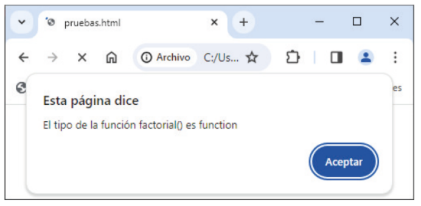

Capítulo 7 - Funciones
En el capítulo anterior vimos y tratamos algunas de las sentencias más utilizadas en JavaScript. Ahora veremos que son las funciones, estas son conjuntos de sentencias que realizan una tarea específica. Son bastante útilies dentro de un programa ya que permite dividirlo o fragmentarlo en secciones más simples y fáciles, así como reutilizar código, reducinedo así la redundancia de las mismas líenas. Veremos que nos será fácil de implementar y entender, pues utiliza las mismas reglas que las de de las variables. Así es como se declara una función:
function prueba(argumento, ..., argumento){
...
}
return expresión; // La expresión 'return' será la sentencia encargada de devolver el re-
sultado de la ejecución.
// Veremos que los argumentos representan los datos de entrada y el contenido incrustado
entre llaves el bloque de código.
Ejemplo de uso de una función:
let lado, area;
lado = Number(prompt("Lado:"));
if(lado != NaN && lado > 0){
area = calcularArea(lado); // Declaramos que la variable creada como 'area' equivale
al resultado de la función "calcularArea".
alert("El área de un cuadrado de lado " + lado + " es " + area);
} else{
alert("No ha introducido un número positivo");
}
function calcularArea(lado){ // Lo que estamos haciendo es crear una función de nombre
"(calcularArea)" con uso de la variable '(lado)'.
let area = lado ** 2
return (area):
}
Estas son algunas de las características más importantes a tener en cuenta antes de comenzar a usar las funciones en JavaScript:
Inicialización teórica: La deflaración de funciones sigue las mismas reglas sintácticas que las variables (vistas en apartados anteriores).
Composición/Sintaxis fácil: Posee una estructura simple, "function" + nombre + (cadena de argumentos → argumento, ..., argumento){...}.
Prioridad de lectura: JavaScript prioriza la lectura de las declaraciones tanto de funciones como de variables, independientemente de su orden dentro del código escrito. Dejándo de lado lo que hasta entonces conocíamos como lenguajes de lectura secuencial.
Predisposición: Así como las variables, además de poder tener un valor fijo, invariable. Las funciones también permiten ser declradas de forma variable/cambiante, cuando no conocemos el número de argumentos: "function" + nombre + ("...listaArgumentos"){...}.
Objetos: Aunque pueda sonar confuso, al igual que los tipos de datos y las variables, JavaScript interpreta las funciones como objetos del tipo "Function". Por consiguiente, esto conlleva a que se den casos donde una función sea la asignación valor de una variable o constante. Ejemplo:
Ejemplo de una función leída como objeto: function factorial(x){ return x < 2 ? 1 : * factorial(x - 1); } alert("El tipo de la función factorial() es " + typeof factorial);
Alcance: Como ya sabemos (si venimos previamente de otros lenguajes) las variables y constantes que son declaradas o definidas dentro del bloque pincipal del código del programa serán de uso/ámbito global. Por el contrario, si estas son asignadas dentro de una función tendrán un alcance máximo de carácter local, es decir, de uso exlusivo para dicha función, impidiendo así el uso de la variable fuera de la función.
Una cosa curiosa es que si declaramos dos funcionas, una global y otra local, pero ambas con el mismo nombre, si recordamos lo mencionado en estos casos, JavaScript imprimirá un error; pero al tratarse de variables "aisladas" declaradas en distintos ámbitos/bloques, no existe dicho error, y por tanto, se obvia tal regla. Por último, hay que tener en cuenta que variable se está haciendo referencia, para ello, JavaScript prioriza la variable definida en su ámbito, en su bloque más específico, es decir, si a la hora de ejecutar el código JavaScript se encuentra leyendo la función "prueba", por ejemplo, dentro del ámbito de la función, JavaScript interpretará que la función que se está leyendo es la del bloque local y no la general/global.